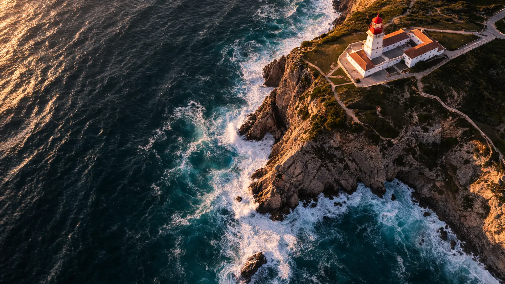
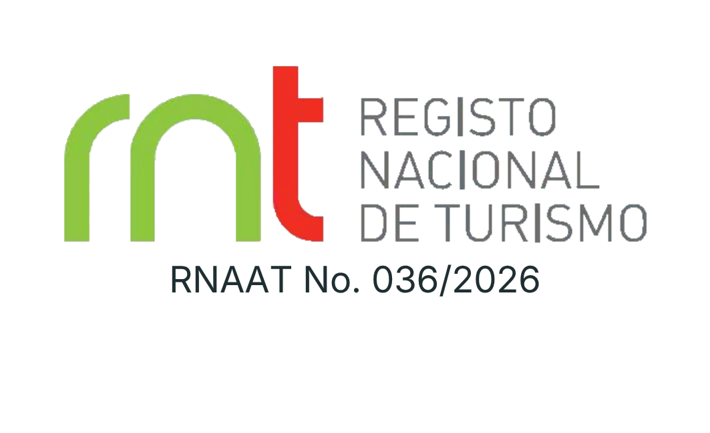
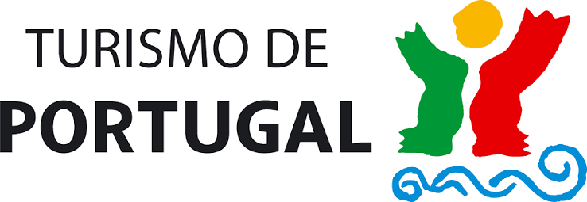
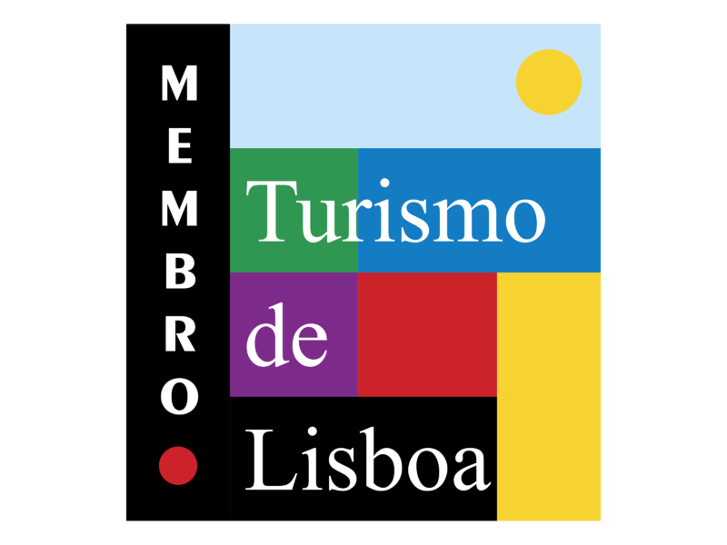
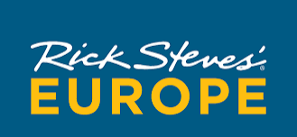
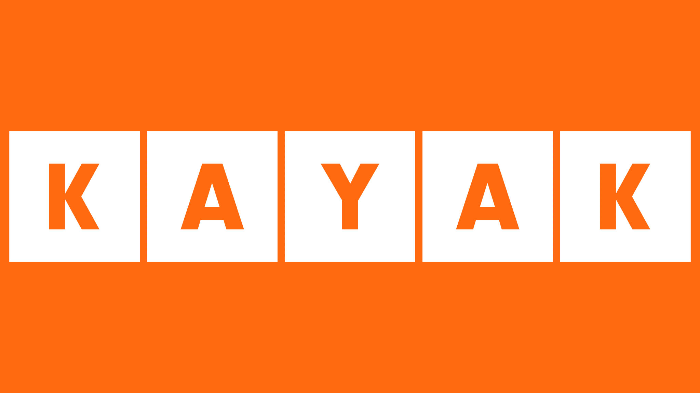
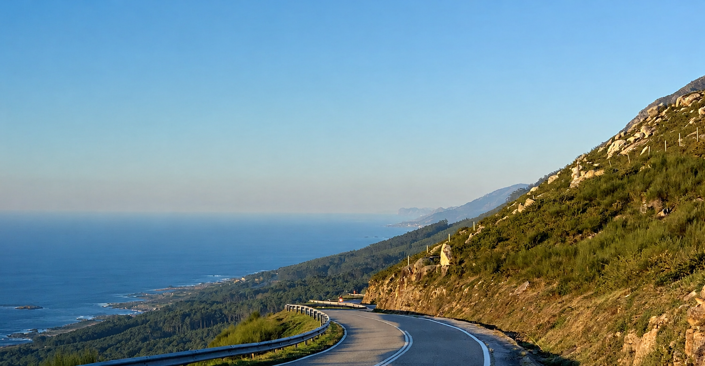

Lisbon
Lisbon in Perspective
Mapping the city’s evolution from medieval quarters to refined avenues: a foundation for your stay.
Discover the journey ↗
Private journeys through Portugal
Private journeys through Portugal, curated with perspective, thoughtful pacing and personal care—so your time here feels entirely your own.
Travel, practiced as curation
We begin with what matters to you, then choose and connect each element so your time in Portugal feels coherent, personal and entirely your own.
What belongs stays. What adds noise is left behind.

The BLU point of view
Depth over display. Context over spectacle. The confidence to choose what makes the journey meaningful.
Explore Portugal
Private journeys shaped around the history,
landscapes, traditions and people that give
each place its character.
A considered selection
Lisbon
Mapping the city’s evolution from medieval quarters to refined avenues: a foundation for your stay.
Discover the journey ↗Sintra & the Atlantic
Three perspectives on how we search for meaning, simplify what surrounds us and compose a life with intention.
Discover the journey ↗Alentejo
Cork forests, clay amphorae and the hands that keep the Alentejo’s traditions connected to the land.
Discover the journey ↗Private travel, at your scale
Begin with the time you have. BLU can curate a focused day, connect a sequence across one or several regions, or shape your complete journey through Portugal.
A focused private experience with depth, context and thoughtful pacing.
A considered sequence across one region, joined by purpose rather than proximity alone.
Destinations, stays, people and transitions curated as one coherent whole.
Who will share the journey?
The same place can hold a different purpose depending on who shares it. We consider the relationships, interests, ages and individual needs behind every journey.
Couples
Private journeys created around shared interests, meaningful occasions and the pleasure of discovering somewhere together.
Families
Journeys balancing different ages, interests, energy levels and mobility—without making anyone feel they are compromising.
Friends
Private days and longer journeys built around common interests, celebrations and the pleasure of being together.
Solo travelers
Freedom without carrying every decision alone, alongside selected hosted departures for those who prefer good company.

The people behind BLU
Adriana brings the investigative eye of a travel journalist and the judgment of a curator. Tiago, born and raised in Lisbon, brings local knowledge, historical perspective and attentive hosting.
Your first conversation, the curatorial decisions and the care behind the journey remain close to the people who created BLU.
Meet BLU ↗How we work
Our method protects your time while leaving room for the character of each place—and for the unexpected moments worth keeping.
We begin with you: your interests, priorities and preferred way of travelling.
We identify what genuinely matters and find the central idea that will hold the journey together.
We select what belongs, connect each moment and remove what does not contribute.
We care for the practical details and remain attentive before and while the journey is lived.
The BLU difference
Four principles behind every BLU journey.
Every decision begins with the people travelling.
Context turns visits into understanding.
Enough time to arrive, notice and feel.
Attentive support before and during travel.
Guest reflections
The details may differ from one journey to another. What matters is how the time felt while it was being lived.
01“It felt like
Guest reflection · Private journey in Portugal
spending the
day with
friends.”
02“We never
Guest reflection · Private journey in Portugal
felt rushed.”
03“We felt
Guest reflection · Private journey in Portugal
understood
and seen.”
Built on trust





Follow the journey
Places, people, details and moments from the
journeys we curate.

Begin with what matters to you
Share your plans with us. Adriana will personally review them and return with a considered first direction.
Plan your journey ↗